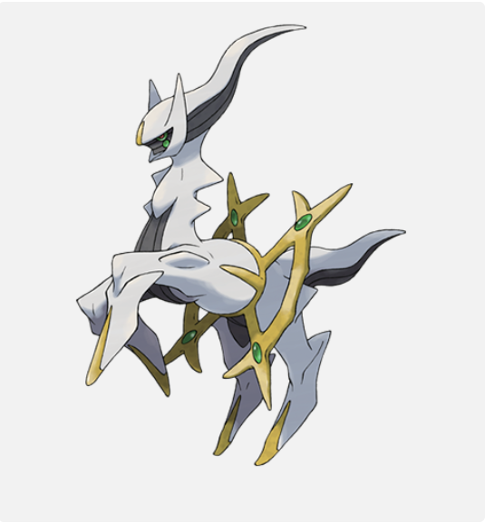

Carta TCG
- Tipo: Incolor
- PS: 130 HP
- Fraqueza: Lutador (x2)
- Resistência: Nenhuma
- Custo de Recuo: 3 Energias Incolores
Arceus
Arceus é considerado o Pokémon criador do universo Pokémon, tendo dado origem a Dialga, Palkia e Giratina antes mesmo da existência do tempo e do espaço como conhecemos. Ele carrega uma placa em seu corpo que pode mudar seu tipo, refletindo sua ligação com todos os elementos da natureza. Lendas o descrevem como uma entidade que moldou o mundo a partir do caos, sendo tratado quase como uma divindade por diversas culturas dentro da região de Sinnoh.